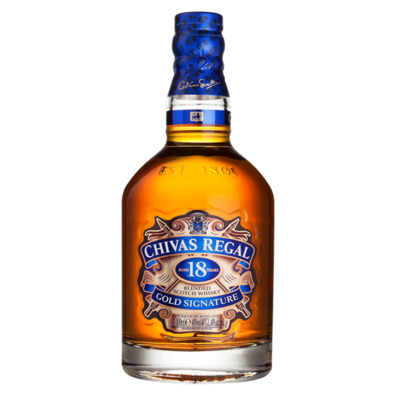

Recepti za bezalkoholne Chivas napitke
Otkrijte svet elegantnih mocktaila koje možete sami kreirati. Svaki recept je osmišljen da pruži luksuzno iskustvo, potpuno bez alkohola.

Chivas Zero Classic
Jednostavan napitak koji imitira izgled viskija sa sodom.
Sastojci:
- Bezalkoholni viski sirup
- Soda voda
- Led

Chivas Zero Citrus
Osvježavajuć mocktail sa citrusnim notama i blagom gorčinom.
Sastojci:
- Sirup sa ukusom viskija
- Sok od pomorandže
- Limun
- Led

Chivas Zero Honey
Napitak sa blagom slatkoćom meda, može biti topao ili hladan.
Sastojci:
- Bezalkoholni viski sirup
- Med
- Voda
- Limun
Kako Pripremiti Chivas Zero Classic
- U nisku čašu dodaj led do pola.
- Dodaj bezalkoholni sirup sa ukusom viskija.
- Dopuni čašu soda vodom ili običnom mineralnom vodom.
- Lagano promešaj i ukrasi kriškom narandže ili limuna.